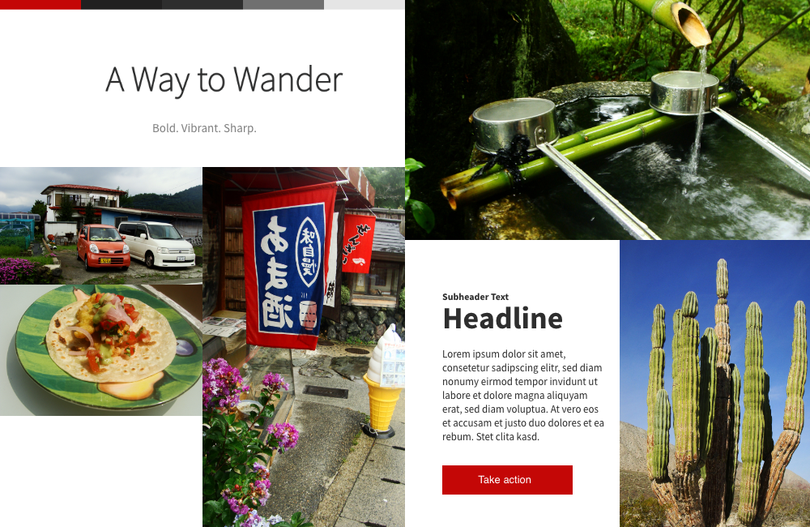

Overview
| Date | Winter 2019 |
| My Role | Designer, Developer, Photographer |
| Collaboration | Miya Torimaru (Content Author) |
| Tools | Adobe Xd |
The Problem
What began as a side project to document adventures on a Wordpress site evolved into the need for a custom-designed site to better showcase the variety of content available. With limited user data to work with, it was difficult to define who was interested in reading our content. Furthermore, high-quality photos are essential for capturing the reader's attention but can cause slow loading times, especially on mobile.
Research
Upon examining other adventure blogs, we observed nearly all use large colorful photos to catch the reader's attention. Many blogs, however, also used eye-catching banners which made the experience feel overwhelming. We wanted to take a different approach and create a more toned-down design to allow the photos to tell the story.
User Flow Diagram
Wireframes
Created with Adobe Xd
Moodboards
Winter moodboard

Summer moodboard
Fall moodboard
Following the advice and template of Creative Director Josh Iwata, I created a few moodboards to present to my colleague/client. This helps clients decide the feeling they want thus decreasing the risk of dissatisfaction with a design down the road. For ease of discussion, I named each one after a season. The client chose the winter moodboard for a more sophisticated look.
Mockups


I used the moodboards to add style to the wireframes. This made the process much quicker than trying to create the layout and style elements simultaneously. I ended up moving the Instagram widget to a social footer at the bottom of the page because I realized there were too many images to load at the top of the screen and can cause slow loading times.
View Prototype
Development
- HTML generator – Jekyll
- Front-end framework – Bootstrap
- Hosting – GitHub Pages
Project Retrospective
This was my first experience using a UX mockup/prototyping tool and a more formalized design approach. I really enjoyed following Josh Iwata's design process as it helped me focus on each step individually. Although a travel blog may not be the most innovative project, I was able to focus on developing a solid design process. I would like to improve this project by creating a logo and implementing lazy loading for images to improve the mobile experience.
View Live Site